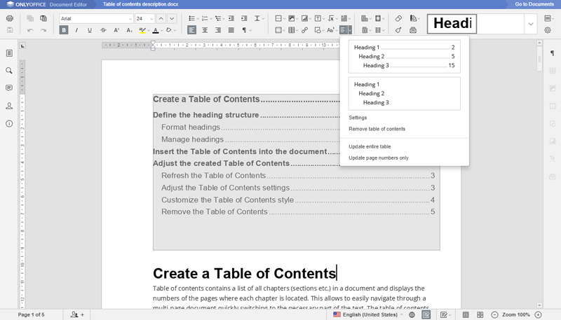
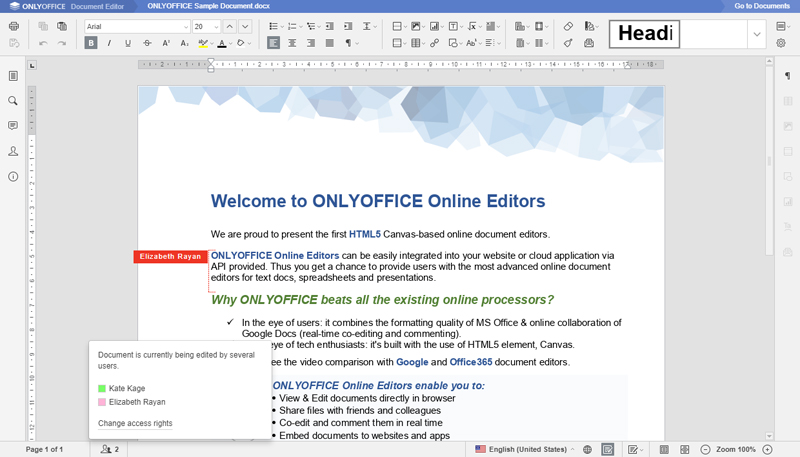

FOSS Project Spotlight: ONLYOFFICE, an Online Office Suite
ONLYOFFICE is a free and open-source
office suite that provides an
alternative for three major MS Office apps—Word, Excel and
PowerPoint—working online.
ONLYOFFICE's main features include:
-
Text, spreadsheet and presentation online viewers and editors.
-
Support for all popular file formats: DOC, DOCX, ODT, RTF, TXT, PDF, HTML,
EPUB, XPS, DjVu, XLS, XLSX, ODS, CSV, PPT, PPTX and ODP.
-
A set of formatting and styling tools common for desktop office apps.
-
A set of collaboration tools: two co-editing modes (fast and strict),
commenting and built-in chat, tracking changes and version history.
-
Ready-to-use plugins: Translator, YouTube, OCR, Photo Editor and more.
-
Macros to standardize work with documents.
-
Support for hieroglyphs.

Figure 1. ONLYOFFICE Formatting and Styling Tools
Ways to use ONLYOFFICE:
-
Integrated with a collaboration platform: for teams, ONLYOFFICE can be installed together with a set of
productivity tools designed by ONLYOFFICE that includes CRM, projects,
document management system, mail, calendar, blogs, forums and chat.
-
Integrated with popular web services:
for users of popular services like Nextcloud, ownCloud, Alfresco,
Confluence or SharePoint, ONLYOFFICE offers official connectors to integrate
online editors and edit documents within them. Some web services, like the eXo
Platform, provide users with their own connectors or offer instructions like
Seafile for integration with ONLYOFFICE.
-
Integrated with your own web apps:
for developers who are building their own productivity app, no matter what
kind of application they provide to users or which language they use to
write it, ONLYOFFICE offers an API to help them integrate online editors with
their apps.

Figure 2. Co-Editing with ONLYOFFICE
To use this online office suite, you need to have the ONLYOFFICE Document Server
installed, and you can choose from multiple installation options: compile the
source code available on GitHub, use .deb or
.rpm packages or the Docker
image.
—Tatiana Kochedykova
Copyright © 1994 - 2018 Linux Journal. All rights reserved.